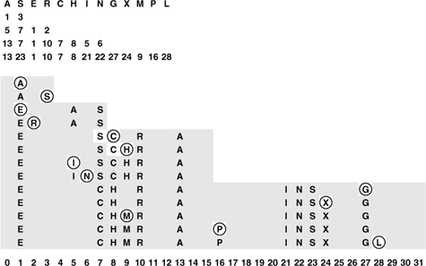
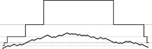

C++ Programming Robert Sedgewick - Princeton University Addison Wesley Professional Algorithms in C++, Parts 1–4: Fundamentals, Data Structure, Sorting, Searching, Third Edition C++ Programming Robert Sedgewick - Princeton University Addison Wesley Professional Algorithms in C++, Parts 1–4: Fundamentals, Data Structure, Sorting, Searching, Third Edition
14.5. Dynamic Hash Tables
As the number of keys in a hash table increases, search performance degrades. With separate chaining, the search time increases gradually—when the number of keys in the table doubles, the search time doubles. The same is true of open-addressing methods such as linear probing and double hashing for sparse tables, but the cost increases dramatically as the table fills up, and, worse, we reach a point where no more keys can be inserted at all. This situation is in contrast to search trees, which accommodate growth naturally. For example, in a red-black tree, the search cost increases only slightly (by one comparison) whenever the number of nodes in the tree doubles.
One way to accomplish growth in a hash table is to double the table's size when it begins to fill up. Doubling the table is an expensive operation because everything in the table has to be reinserted, but it is an operation that is performed infrequently. Program 14.7 is an implementation of growth by doubling for linear probing. An example is depicted in Figure 14.12. The same solution also works for double hashing, and the basic idea applies to separate chaining as well (see Exercise 14.46). Each time that the table gets more than half full, we expand the table by doubling it in size. After the first expansion, the table is always between one-quarter and one-half full, so the search cost is less than three probes, on the average. Furthermore, although the operation of rebuilding the table is expensive, it happens so infrequently that its cost represents only a constant fraction of the total cost of building the table.
This diagram shows the process of inserting the keys A S E R C H I N G X M P L into a dynamic hash table that expands by doubling, using the hash values given at the top and resolving collisions with linear probing. The four rows beneath the keys give the hash values when the table size is 4, 8, 16, and 32. The table size starts at 4, doubles to 8 for the E, to 16 for the C and to 32 for the G. All keys are rehashed and reinserted when the table size doubles. All insertions are into sparse tables (less than one-quarter full for reinsertion, between one-quarter and one-half full otherwise), so there are few collisions.

Program 14.7. Dynamic hash insertion (for linear probing)|
This implementation of insert for linear probing (see Program 14.4) handles an arbitrary number of keys by doubling the size of the table each time that the table becomes half full (this same approach can be used for double hashing or separate chaining). Doubling requires that we allocate memory for the new table, rehash all the keys into the new table, then free the memory for the old table. Member function init is used to construct or to reconstruct a table filled with null items of a specified size: it is implemented in the same way as the ST constructor in Program 14.4, so the code is omitted.
private:
void expand()
{ Item *t = st;
init(M+M);
for (int i = 0; i < M/2; i++)
if (!t[i].null()) insert(t[i]);
delete t;
}
public:
ST(int maxN)
{ init(4); }
void insert(Item item)
{ int i = hash(item.key(), M);
while (!st[i].null()) i = (i+1) % M;
st[i] = item;
if (N++ >= M/2) expand();
}
|
Another way to express this concept is to say that the average cost per insertion is less than four probes. This assertion is not the same as saying that each insertion requires less than four probes on the average; indeed, we know that those insertions that cause the table to double will require a large number of probes. This argument is a simple example of amortized analysis: We cannot guarantee that each and every operation will be fast for this algorithm, but we can guarantee that the average cost per operation will be low.
Although the total cost is low, the performance profile for insertions is erratic: Most operations are extremely fast, but certain rare operations require about as much time as the whole previous cost of building the table. As a table grows from 1 thousand to 1 million keys, this slowdown will happen about 10 times. This kind of behavior is acceptable in many applications, but it might not be appropriate when absolute performance guarantees are desirable or required. For example, while a bank or an airline might be willing to suffer the consequences of keeping a customer waiting for so long on 10 out of every 1 million transactions, long waits might be catastrophic in other applications, such as an online system implementing a large financial transaction-processing system or in an air-traffic control system.
If we support the remove ADT operation, then it may be worthwhile to contract the table by halving it as it shrinks (see Exercise 14.44), with one proviso: The thresholds for shrinking have to be separated from those for growing, because otherwise a small number of insert and remove operations could cause a sequence of doubling and halving operations even for huge tables.
Property 14.6. A sequence of t search, insert, and delete symbol-table operations can be executed in time proportional to t and with memory usage always within a constant factor of the number of keys in the table|
We use linear probing with growth by doubling whenever an insert causes the number of keys in the table to be half the table size, and we use shrinkage by halving whenever a remove causes the number of keys in the table to be one-eighth the table size. In both cases, after the table is rebuilt to size N, it has N/4 keys. Then, N/4 insert operations must be executed before the table doubles again (by reinsertion of N/2 keys into a table of size 2N), and N/8 remove operations must be executed before the table halves again (by reinsertion of N/8 keys into a table of size N/2). In both cases, the number of keys reinserted is within a factor of 2 of the number of operations that we performed to bring the table to the point of being rebuilt, so the total cost is linear. Furthermore, the table is always between one-eighth and one-fourth full (see Figure 14.13), so the average number of probes for each operation is less than 3, by Property 14.4.
|
This diagram shows the number of keys in the table (bottom) and the table size (top) when we insert keys into and remove them from a dynamic hash table using an algorithm that doubles the table when an insert makes it half full and halves the table when a removal makes it one-eighth full. The table size is initialized at 4 and is always a power of 2 (dotted lines in the figure are at powers of 2). The table size changes when the curve tracing the number of keys in the table crosses a dotted line for the first time after having crossed a different dotted line. The table is always between one-eighth and one-half full.

This method is appropriate for use in a symbol-table implementation for a general library where usage patterns are unpredictable, because it can handle tables of all sizes in a reasonable way. The primary drawback is the cost of rehashing and allocating memory when the table expands and shrinks; in the typical case, when searches predominate, the guarantee that the table is sparse leads to excellent performance. In Chapter 16, we shall consider another approach that avoids rehashing and is suitable for huge external search tables.
Exercises |  14.40 Give the contents of the hash table that results when you insert items with the keys E A S Y Q U T I O N in that order into an initially empty table of initial size M = 4 that is expanded with doubling whenever half full, with collisions resolved using linear probing. Use the hash function 11k mod M to transform the kth letter of the alphabet into a table index. 14.40 Give the contents of the hash table that results when you insert items with the keys E A S Y Q U T I O N in that order into an initially empty table of initial size M = 4 that is expanded with doubling whenever half full, with collisions resolved using linear probing. Use the hash function 11k mod M to transform the kth letter of the alphabet into a table index.
| | | | 14.41 Would it be more economical to expand a hash table by tripling (rather than doubling) the table in size when the table is half full? | | 14.42 Would it be more economical to expand a hash table by tripling the table in size when the table is one-third full (rather than doubling the table in size when the table is half full)? | | 14.43 Would it be more economical to expand a hash table by doubling the table in size when the table is three-quarters (rather than half) full? | | 14.44 Add to Program 14.7 a remove function that deletes an item as in Program 14.4 but then contracts the table by halving it if the deletion leaves it seven-eighths empty. | |  14.45 Implement a version of Program 14.7 for separate chaining that increases the table size by a factor of 10 each time the average list length is equal to 10. 14.45 Implement a version of Program 14.7 for separate chaining that increases the table size by a factor of 10 each time the average list length is equal to 10.
| | 14.46 Modify Program 14.7 and your implementation from Exercise 14.44 to use double hashing with lazy deletion (see Exercise 14.33). Make sure that your program takes into account the number of dummy items, as well as the number of empty positions, in making the decisions whether to expand or contract the table. | | 14.47 Develop a symbol-table implementation using linear probing with dynamic tables that includes a destructor, a copy constructor, and an overloaded assignment operator, and supports the construct, count, search, insert, remove, and join operations for a first-class symbol-table ADT, with support for client handles (see Exercises 12.6 and 12.7). |
|